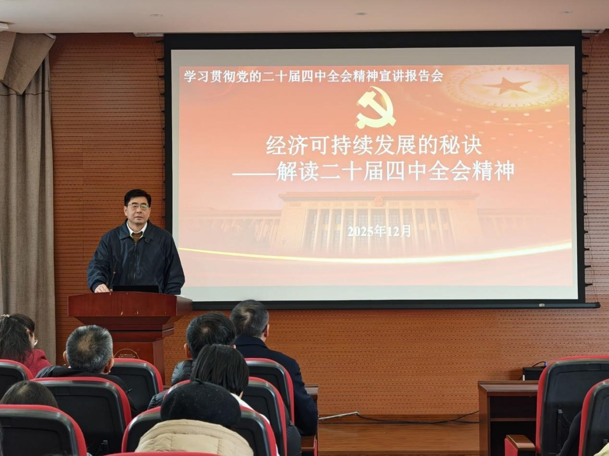

学院通知 · 科研创新
图书馆举行党的二十届四中全会精神宣讲会
发布时间：2025-12-31 10:00:39
为深入学习领会、全面准确把握党的二十届四中全会核心要义和精神实质，切实将全会精神转化为推动图书馆事业高质量发展的强大动力，12月26日，图书馆在工学馆五楼报告厅召开了学习贯彻党的二十届四中全会精神宣讲会。会议特邀校党委常委、组织部部长王金友作专题宣讲报告。图书馆班子成员、全体教职工参会，会议由党委书记秦远清主持。 会上，王金友以《经济可持续发展的秘诀——解读二十届四中全会精神》为题展开深入剖析，内容涵盖二十届四中全会基本情况、中央“十五五”规划建议的深刻内涵以及全面贯彻落实全会精神的具体要求。他谈到，此次全会是在我国迈向基本实现社会主义现代化目标的关键阶段召开的一次具有重大意义的会议，会议审议通过的《中共中央关于制定国民经济和社会发展第十五个五年规划的建议》，为未来五年的发展擘画了蓝图。《建议》的制定过程广泛倾听各方声音、深入开展实地调研，具备高度的战略指导性，精准定位了“十五五”时期的关键角色，系统且全面地谋划了发展蓝图。他强调，十五五”时期，学校顺应国内外形势变化，聚焦世界一流大学建设，深入推进“教育强国，川大有为”行动，大力推进国际化、智能化、特色化，力争在对外科研合作、人工智能、“登高”“进军”等方面取得重大进展和显著成绩。 秦远清在总结讲话中对王金友的精彩宣讲表示衷心感谢。他谈到，报告主题鲜明、论述深刻，既有理论高度，又有实践深度，对于全馆上下深刻理解、准确把握和坚决贯彻全会精神具有重要的启发和帮助，特别是运用其中的指导思想和方法，谋划和规划图书馆十五五事业发展规划，具有很好的实践指导作用。他强调，学习贯彻二十届四中全会精神是一项重要政治任务，关键在于融会贯通、学以致用。全馆上下要进一步提高政治站位，强化责任担当，在理论学习的深化上下功夫，在学习成果的转化上求突破，在实际工作的落实上见实效，并且以此次宣讲会为新的起点，进一步统一思想、统一意志、统一行动，把学习成果转化为推动工作的强大动力，奋力开创图书馆事业发展的新局面。 通过宣讲会的专题学习，图书馆全体教职工加深了对二十届四中全会精神的理解和认识，学习宣讲会也为推动图书馆事业高质量发展注入了新的活力和动力。图书馆将持续深入学习贯彻全会精神，为助力学校高质量发展和人才培养贡献图书馆更多更大的力量。
